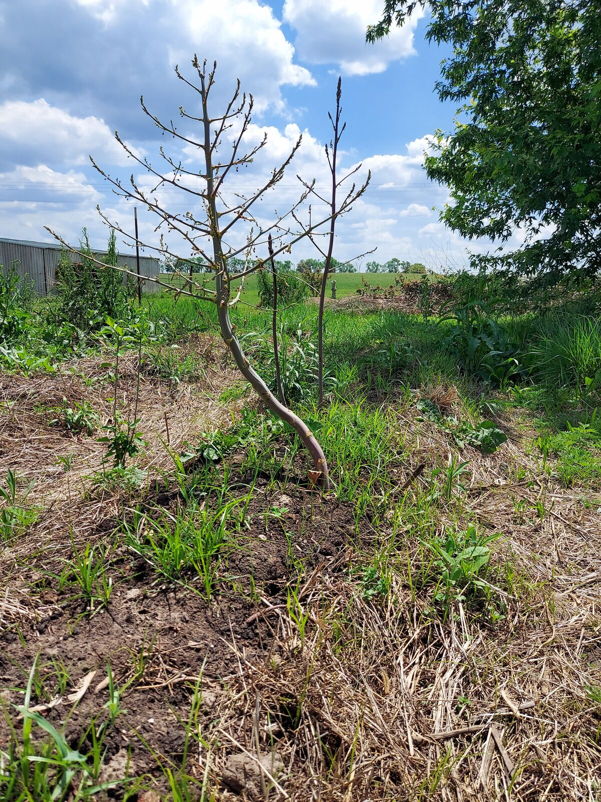
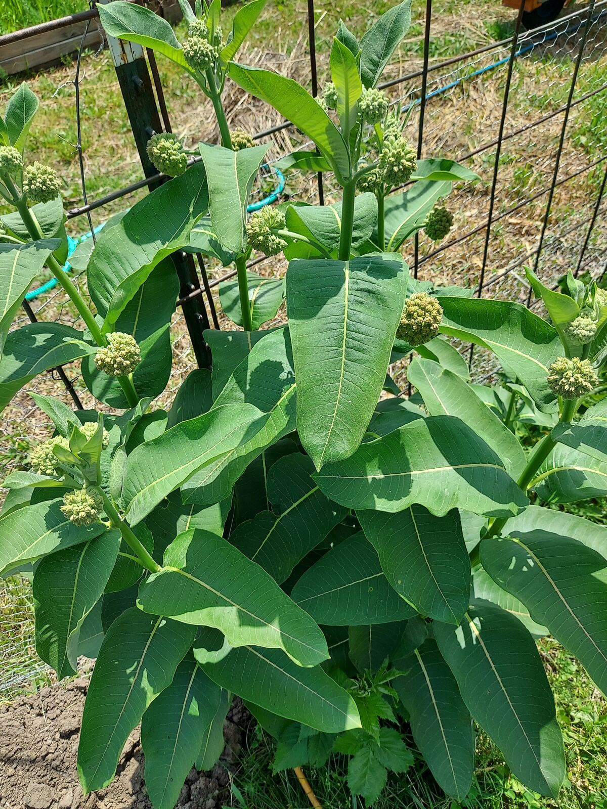

I’m beginning close to home in rural Missouri, while building Ascendism as an invitation for people and families across the United States.
The question behind this work is simple, even if the work itself is not: how do we make a more grounded, capable life possible—together—without pretending land, community, or independence are easy?
Why I’m building this
My life has been shaped by making things: music production and engineering, graphic design, writing, programming, gardening, and practical experiments in self-reliance. Over time, I have wanted to connect those threads to something more durable than a private project—a place where people can learn what they have to offer, find others who are compatible in the ways that matter, and take real steps before making giant commitments.
Ascendism is not a finished blueprint or a promise that strangers are a perfect match. It is a structured, human starting point for people moving toward useful skills, reciprocal relationships, and a future with more room to act.
Work close to the ground
Growing and learning from the land is part of what keeps this idea concrete. The point is not an aesthetic of escape; it is patience, stewardship, useful work, and the reality that a shared life has to be built one relationship and one responsibility at a time.





A profile model for members
When the member service is online, verified Discord members will be able to build a similarly limited, human profile: one rounded profile image, up to five additional images, a public-safe region, what they know, what they can contribute, what they are looking for, and what they prefer to keep private. No exact addresses, no forced public sharing, and no algorithmic promise that strangers are a “perfect match.”